Biosecurity working example
Abagael Sykes, Gustavo Machado
2021-05-20
Source:vignettes/Vignette_biosecurity.Rmd
Vignette_biosecurity.RmdMrIML is a R package allows users to generate and interpret multi-response models (i.e., joint species distribution models) leveraging advances in data science and machine learning. MrIML couples the tidymodel infrastructure developed by Max Kuhn and colleagues with model agnostic interpretable machine learning tools to gain insights into multiple response data such as. As such MrIML is flexible and easily extendable allowing users to construct everything from simple linear models to tree-based methods for each response using the same syntax and same way to compare predictive performance.In this vignette we will guide you through how to apply the MrIML framework to identify and benchmark biosecurity practices in veterinary disease.
This working example is built upon a classification framework. More information about this can be found in the “Classification working example”.
READY: load the data
This is a synthesized dataset to simulate PRRSV infection, biosecurity practices and farm demographics on swine farms across the united states.
Please note that the data included in this package is simulated, and is not a reflection of any real farm, company or state.
library(mrIML)
#other packages needed
library(ggsci); library(vip); library(mrIML); library(imputeTS); library(mice); library(tidymodels); library(pdp); library(randomForest); library(missForest); library(gbm); library(tidyverse); library(doParallel); library(themis); library(viridis); library(janitor); library(hrbrthemes); library(MRFcov); library(xgboost); library(vegan); library(ggrepel);library(ape); library(plyr); library(flashlight); library(devtools); library(VIM); library(breakDown); library(iml); library(ggpubr); library(DALEX); library(cowplot); library(ggtext); library(dplyr)SET: define the model
This is a random forest model, as used in the classification example. However there are more models available within MrIML and can be found here.
set.seed(130) #set the seed to ensure consistency
load("Q:/My Drive/GitHub/mrIML_1.0.1/data/biosecurity_vignette_data.RData")
data<-biosecurity_vignette_data
#revalue the outcome
colnames(data)[1] <- "Class"
data<-data%>%
mutate(Class = revalue(Class,
c("Negative"="0", "Positive"="1")))
data$Class<-as.numeric(as.character(data$Class))
#split predictor variables and outcome
X <- as.data.frame(data %>% select(1))
Y <- data %>% select(-c(1, 44, 45)) #remove class, group and ID
model1 <- #model used to generate yhat
#specify that the model is a random forest
rand_forest(trees = 100, mtry = tune(), min_n = tune(), mode = "classification") %>%
#select the engine/package that underlies the model
set_engine("ranger", importance = c("impurity","impurity_corrected")) %>%
#must be set to classification for classification problems
set_mode("classification")GO: run the analysis
Now we can train and test our model
yhats <- mrIMLpredicts(X=X, #response data
Y=Y, #features/predictors
model1=model1, #specify your model
balance_data='no', #chose how to balance your data
model='classification', #chose your mode (classification versus regression)
parallel = FALSE, #do you want to run the model in parallel?
seed = 120) #set seedWe can then assess our model performance using a number of performance metrics including area under the curve (AUC), sensitivity, specificity and Matthews correlation coefficient (MCC)
ModelPerf <- mrIMLperformance(yhats, model1, X=X, model='classification')
ModelPerf[[1]] #predictive performance for individual responses ## response model_name roc_AUC mcc sensitivity
## 1 Class rand_forest 0.52724358974359 0.130744090092123 0.461538461538462
## specificity prevalence
## 1 0.666666666666667 0.5
ModelPerf[[2]]#overall predictive performance. r2 for regression and MCC for classification## [1] 0.5272436BENCHMARKING: global importance
Here we can look at the variable importance. This is the dependence between our outcome and biosecurity variables.
#calculate variable importance
VI <- mrVip(yhats, Y=Y)
#plot cumulative variable importance
plot_vi_biosecurity(VI=VI, X=X,Y=Y,
modelPerf=ModelPerf,
cutoff= 0.6,
plot.pca='no') #Follow instructions in console
## Press [enter] to plot individual variable importance summaries## [1] ""We can explore further and assess the partial dependence of each variable. Here we isolate the dependence of one variable and visualize how this dependence changes over different observed values
#create a flashlight object
fl <- mrFlashlight(yhats, X, Y,
response = "single",
index=1,
model='classification')
#plot partial dependence profiles
plot(light_profile(fl, v = "Swine_3_rad"))
BENCHMARKING: Local importance
The following function allows you to visualize and compare predicted risk among and within groups
#apply the trained model to the entire data set to provide risk of predicted outbreak
fit_bio <- pull_workflow_fit(yhats[[1]]$mod1_k)
preds_pos <- predict(fit_bio, data, "prob")
data$predicted <- preds_pos$.pred_1
#process data ready for the function
data$Class <- as.factor(data$Class)
data<-data%>%
mutate(Class = revalue(Class,
c("1" = "Positive", "0" = "Negative")))
data$Class <- relevel(data$Class, "Positive")
#plot among group comparison of predicted risk
mrBenchmark(dat = "data", outcome = "Class", y = "predicted", group = "Group", type = "external") 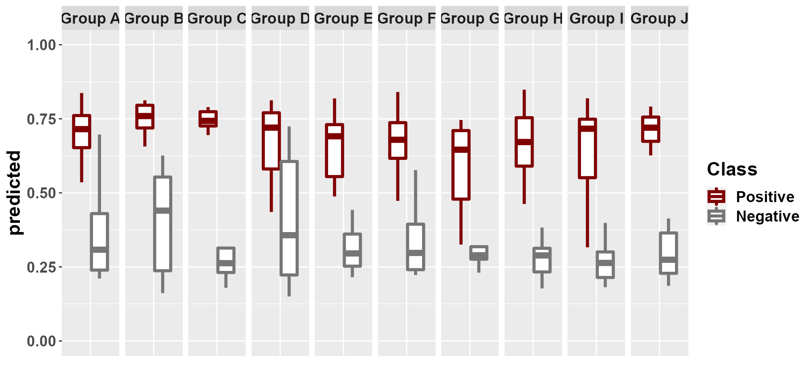
#plot within group comparison of predicted risk
mrBenchmark(dat = "data", outcome = "Class", y = "predicted", group = "Group", label_by = "ID", type = "internal") 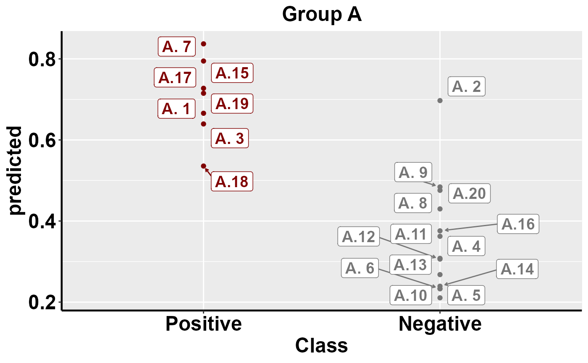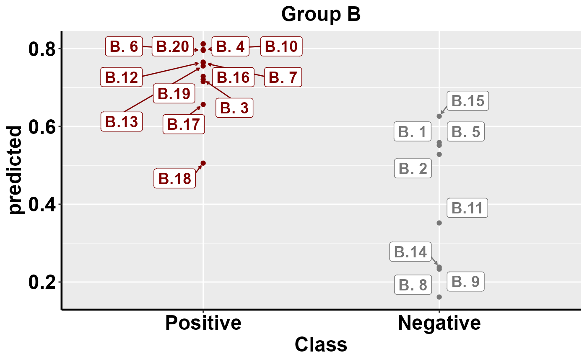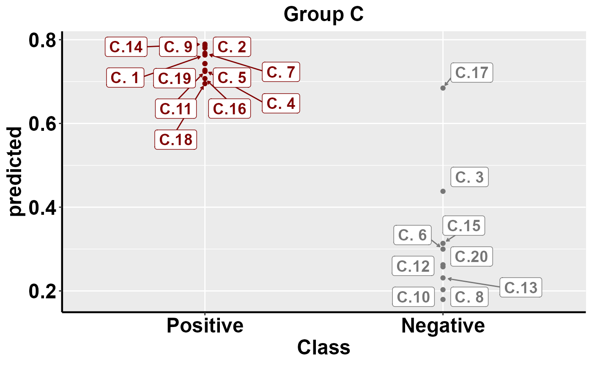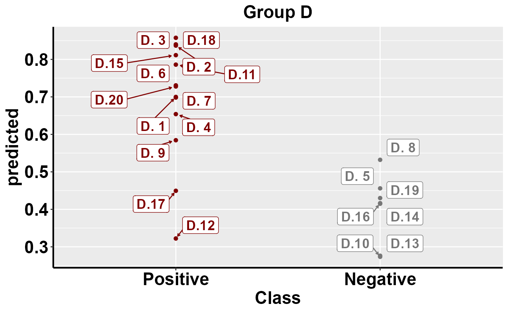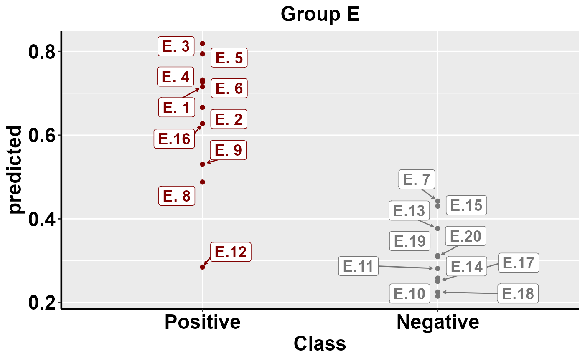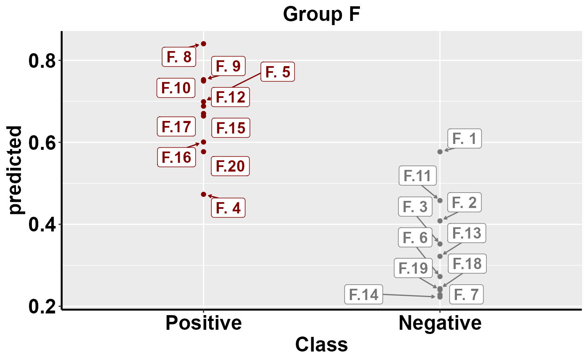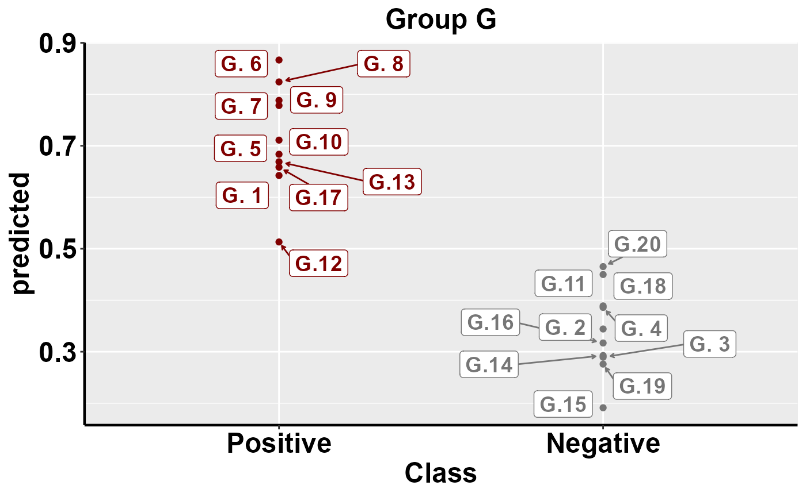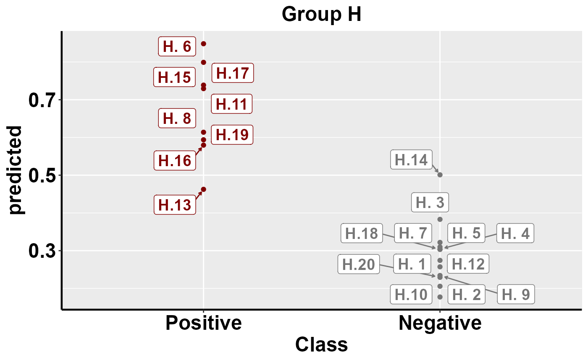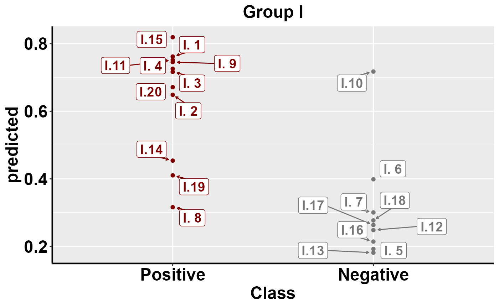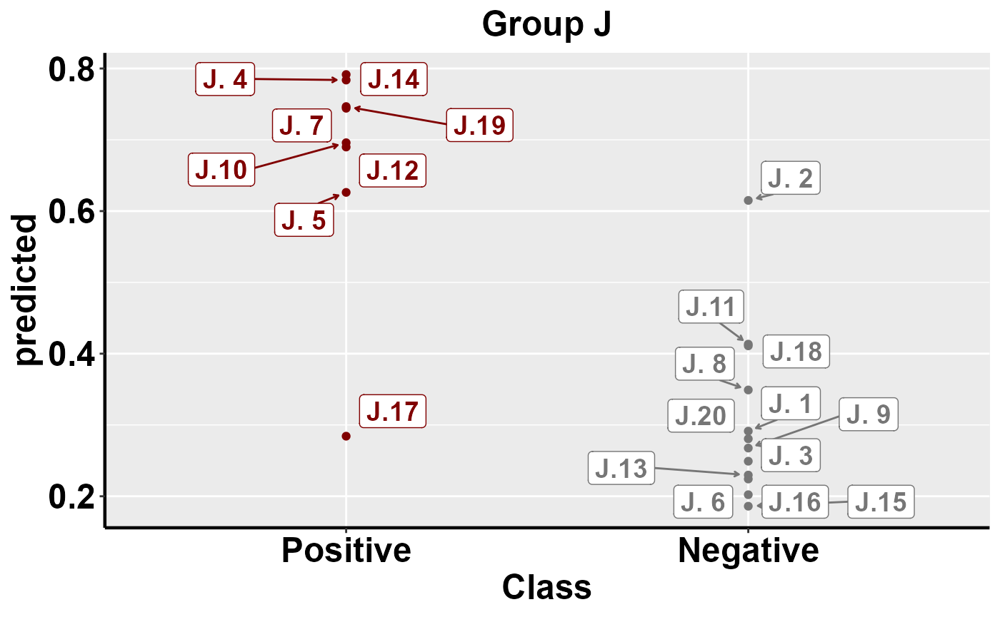
BENCHMARKING: Predicted risk
To investigate and interpret the contribution of variables at an individual level, we must use a local explanation method. Here we implement a local breakDown explainer
#Use this function to implement the local explainer
#mrLocalExplainer(dat = Y, model_dat = yhats, outcome = data$Class)mrLocalExplainer also produces the following objects:
LE_matrix(list) containing the contribution values and respective variables for each individualLE_indiv_plots(list) containing individual waterfall plots of local variable contribution